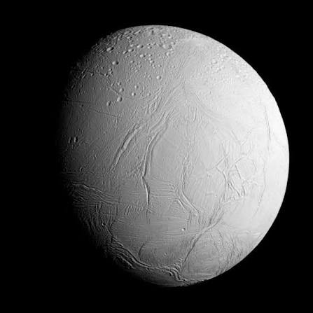
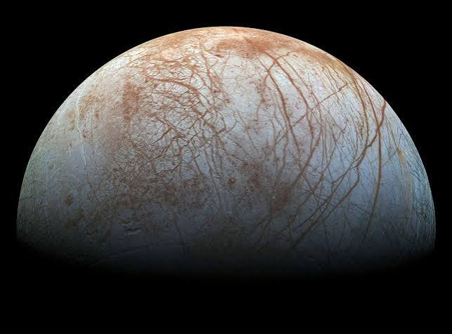
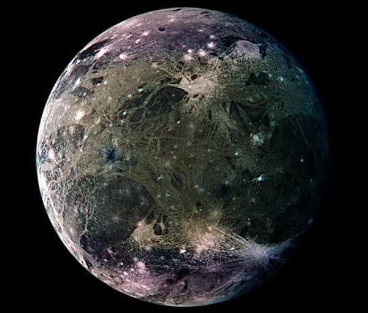
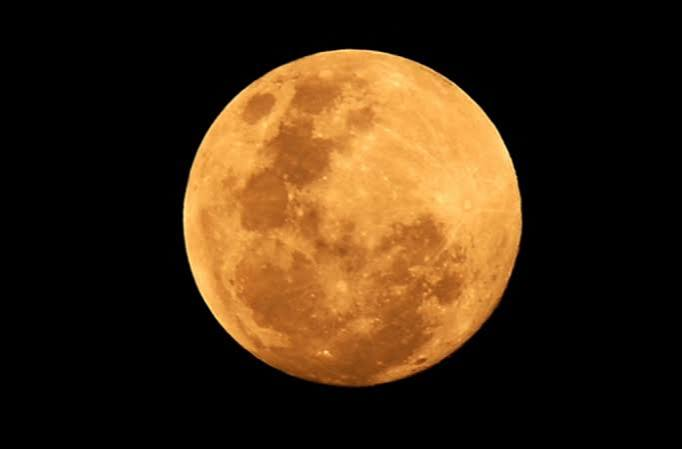
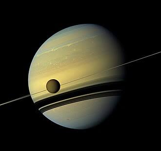

Os satélites são corpos que orbitam ao redor de um planeta, planeta anão ou asteroide. Eles se dividem em duas grandes categorias: naturais (como as luas) e artificiais (construídos por humanos).
Encélado (Saturno): É um mundo congelado e super brilhante. Ela possui um oceano subterrâneo líquido e gigantescos gêiseres no polo sul que lançam jatos de água e gelo diretamente no espaço. Europa (Júpiter): Sua superfície é uma crosta de gelo lisa e cheia de rachaduras coloridas. Cientistas acreditam que abaixo desse gelo existe duas vezes mais água líquida do que em todos os oceanos da Terra juntos, sendo um dos melhores lugares para procurar vida extraterrestre. Ganimedes (Júpiter): É a maior lua do Sistema Solar (maior até que o planeta Mercúrio!). É o único satélite natural conhecido que possui seu próprio campo magnético, além de ter várias camadas de gelo e rocha. Lua (Terra): O nosso satélite natural controla as marés dos oceanos e ajuda a manter o eixo da Terra estável, o que garante as estações do ano como conhecemos. É também o único corpo celeste além da Terra onde os humanos já pisaram. Titã (Saturno): É a única lua do Sistema Solar com uma atmosfera densa (feita de nitrogênio, como a nossa). Em vez de água, chove metano e etano líquido por lá, formando rios, lagos e mares congelantes na superfície.
Os satélites naturais se formam junto com o planeta a partir de poeira cósmica, por colisões gigantescas que lançam detritos no espaço, ou ao capturar asteroides que passavam por perto. Já os artificiais são fabricados por humanos e inseridos em órbita através de lançamentos de foguetes.




